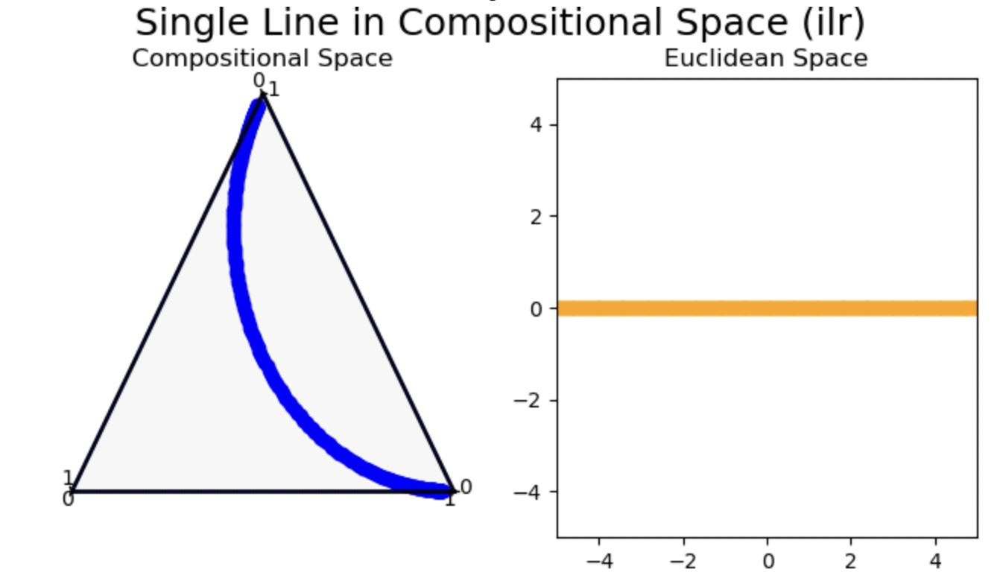

Enter the Simplex
“Compositional data” is data representing the composition of something - i.e. water is 66% H and 33% O (H20) by atom count, so a glass of water could be described as the compositional vector [2/3 1/3] regardless of how big the glass is. It’s scale-independent; it should always sum to one.
The space that compositional data lives in is called the Simplex. “Simplex” is a fancy name for an arbitrarily-dimensional triangle. Just like how we can imagine the set of vectors with magnitude one as existing on a hypersphere (arbitrarily-dimensional sphere), the set of vectors with sum one exists on a (hyper)triangle with vertices along each of the axes - hence the name “simplex”. This is in contrast with ordinary data, which lives in Euclidean space.
Euclidean space is “normal” space; your intuitions about geometric facts are likely to be valid here. However, the Simplex is a different space with different rules. If we do not account for those rules when performing analyses, our results will be erroneous.

If you don’t like the line on the left being “straight”, call it a geodesic; it means the same thing but you probably don’t have any preconceived notions as to its meaning. Note that this is the same reason that long haul planes don’t travel on “straight” lines on the map; the plane is travelling on a straight line (geodesic) in the natural geometry of the earth’s surface (the curvature). A geodesic is the shortest path1 between two points. The Simplex is graphed as a triangle because of its, well, triangular nature - note that it actually has three axes, one for each side. It may have three parameters, but the dimensionality of the data is 2. In arbitrary dimensions, you may have \(n\) numbers, but the last number can always be worked out by 1 minus the sum of the others.
Leaving the Simplex
One method of dealing with the Simplex is to leave it, by mapping our data onto Euclidean space. The most common way to do this is to use log-ratio transformations. The name Aitchison might pop up if you do some research on this; in fact one name for the geometry of the Simplex is Aitchison Geometry.
Log-Ratio Transforms
Take the set of variables \(\{\forall i : x_i\}\) in your compositional data. The set of log-ratios would be \(\{\forall i, j : \log \frac{x_i}{x_j}\}\). Since compositional data is all about relative sizes, it does make intuitive sense why ratios would be important. There are three major log-ratio transforms (CLR, ALR, ILR): they all depend on picking out a particularly nice, small, subset of these log-ratios (or log-ratio-ish things). They’re particularly natural when you have reason to believe your data is close to being log-normally distributed.
Centered Log-Ratio (CLR)
CLR is an isometry - it is a reversible mapping from the Simplex to Euclidean space which perfectly preserves the geometric structure. In other words, it gives us a way of interpreting the Simplex in terms of our pre-existing Euclidean intuitions. While transformations being an isometry does not necessarily make it the right tool for the job, the fact that this is an isometry points to it being a mathematically “natural” thing to do. Mathematics often rewards naturality.
CLR preserves the amount of parameters of the data. The parameters preserve their meaning: the \(i\)th parameter pre- and post-CLR still represent a measure of size for the same thingamajig (somewhat like, but different to, measuring things in miles vs kilometers).
Its downside is that it preserves the number of parameters. As we saw, data in the Simplex requires more parameters than its dimensionality - this is still true in the output of CLR as it does not remove parameters.
As an aside, the inverse function of CLR is Softmax.
Additive Log-Ratio (ALR)
ALR is not an isometry, it is usually close enough to being one (Greenacre et al. 2022) that the difference does not matter too much. Unlike CLR, ALR reduces the amount of parameters of your data to match its dimensionality. It does this by picking one of your original parameters to be the reference; it will be the denominator in all the log-ratios. Hence the log-ratio associated with the reference will always be 0 and can be ignored. This is, of course, a downside if all of the potential references are interesting in their own right, as one will have to be sacrificed.
This is my personal favorite of the log-ratio transforms; even though I am a mathematician, I think approximate equality is just as good as exact equality in the real world. I don’t need my transform to be an exact isometry.
Sidequest: How to choose a good reference for ALR
I couldn’t find anything online 🤷♂️ I assume it’s best to just pick the least interesting parameter. For what I do, there are many uninteresting parameters so this should not be a problem. If we chose a constant parameter \(1\), then I guess this would be equivalent to just taking the log transform.
Isometric Log-Ratio (ILR)
ILR is an isometry, and it also reduces the parameterspace to match the dimensionality. It does this at the cost of interpretability; while there is some kind of interpretation based on the concept of “balances”2, the parameters post-ILR are not directly related to those pre-ILR. This is my least favorite of the log-ratio transforms; it is mathematically interesting, but at least in the work that I’ve been doing lately I very much want the parameters pre-ILR and post-ILR to have obvious and immediate relationships.
Other Transforms
There are other transforms, such as Box-Cox (Tsagris, Preston, and Wood (2011)), which are interesting in their own right.